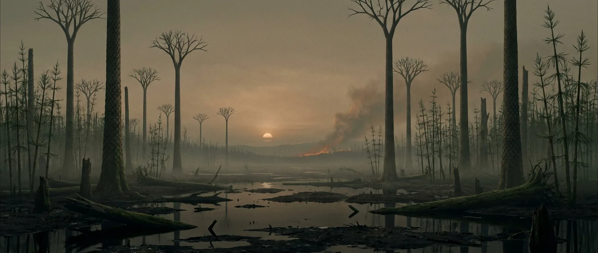
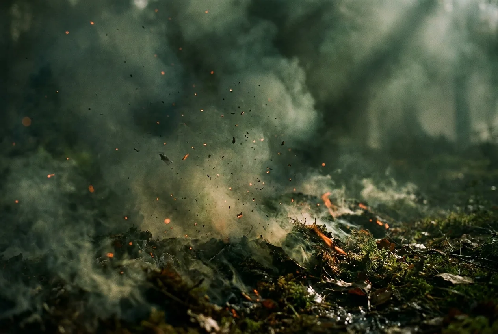
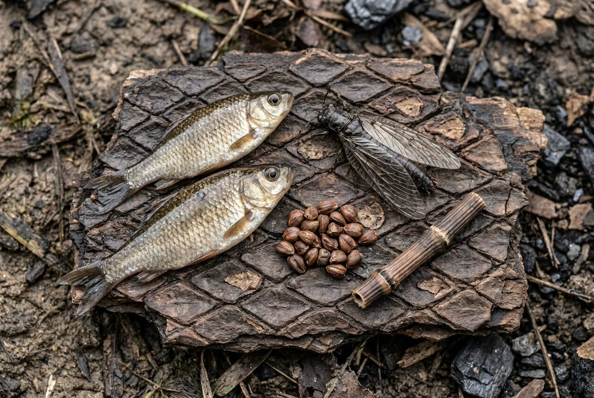

The single best interval to be dropped into before mammals exist. Oxygen is at its all-time peak, the swamps are full of fuel and fresh water, and nothing on land is big enough to hunt you. The trade is that the whole world is one dropped spark from burning.
With basic bushcraft this is survivable indefinitely in principle. What ends it in practice is an infected wound with no antibiotics, or a fire you did not start moving faster than fire moves in air you have ever breathed.

Scale 0–40%. The highest in Earth's history and richer than yours, though the early Permian that follows starts from the same peak. Expect noticeably better endurance at altitude.
Scale 0–2,000 ppm; today about 428 ppm, mid-2026. Forests buried carbon faster than anything could rot it, and drew CO₂ down to near modern levels. That buried carbon is the coal.
Scale −20 to 250 °C. Close to today, but the distribution is not: equatorial swamps stay hot and wet while Gondwana carries continental ice sheets.
Above roughly 25% O₂ even damp vegetation sustains a flame. Charcoal (fusain) is found through the coal record, so fire was near-continuous somewhere.
Scale 0–24 h. About 385 days in a year. Short enough to notice if you were counting, not enough to matter.
Scale 0–30 m. A millipede longer than a car, and a herbivore. The only land animal here with any interest in hurting you is a 70 cm scorpion.

At 30%+ oxygen, moderate exertion costs less. The effect is real but modest, and it does not make you superhuman. Sustained partial pressures above about 0.5 bar damage lungs; this sits under that, at roughly 0.3.
This is the interval's actual signature threat. Ignition is easy, flame spread is fast, and material you would consider too wet to burn will carry fire. The habit you built in normal air, that a fire needs tending to stay alive, is exactly backwards here.
The forest is enormous and almost entirely inedible: lycopsid bark, lignin, cellulose. Your calories come from fresh water instead. Fish, amphibians, freshwater arthropods, and seed ferns, which do produce real seeds.
No pathogen here has evolved to target a mammal, so you will not catch a disease. Environmental bacteria in a wound do not care. This is the most likely thing to actually kill you, in every interval from here to the Pleistocene.
Water, fuel, shelter material, protein and a stable climate band all exist within walking distance of each other. Stay in the equatorial belt, away from the Gondwanan ice, and the Carboniferous will not be what ends you.
You probably do. Here is what the planet is offering.

Better than modern. The only atmosphere in the deep past you could run a marathon in.
Everywhere, and stagnant. Boil it. Not for pathogens, which are not adapted to you, but for the amoebae and the tannin load.
Freshwater fish, amphibians up to two metres, insects at unusual sizes, and seed-fern seeds. No fruit, no grain, no roots worth digging.
Trivially easy and genuinely dangerous. Build it on open mud, small, downwind of nothing you own.
The first interval with real timber. Lepidodendron bark comes off in workable sheets and the wood is soft enough to cut with stone.
None. Bring antibiotics or accept that a deep cut is a coin flip.